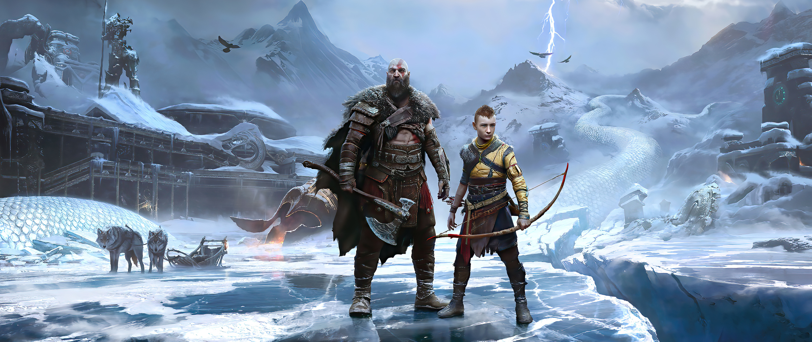

O Renascimento da Lenda Em 2005, a Sony Santa Monica lançou o primeiro "God of War", apresentando Kratos, um guerreiro espartano sedento por vingança contra os deuses do Olimpo. Com sua jogabilidade intensa e combates brutais, o jogo rapidamente cativou jogadores em busca de ação implacável e desafios épicos.
Reinvenção Triunfante No entanto, foi a reinvenção de "God of War" em 2018 que verdadeiramente surpreendeu o mundo dos jogos. Sob o título simples de "God of War", o jogo apresentou um Kratos mais velho e cansado, agora vivendo em um reino de deuses nórdicos. A narrativa se concentrou na relação entre Kratos e seu filho, Atreus, enquanto eles embarcam em uma jornada emocional e repleta de perigos. Uma Jornada Além da AçãoAlém de combates viscerais, "God of War" de 2018 trouxe uma profundidade emocional raramente vista em jogos desse gênero. A conexão entre Kratos e Atreus, juntamente com a exploração de temas como paternidade, redenção e a luta contra o destino, adicionou camadas de complexidade à trama. Experiência Visual e Sonora Impecável A jornada nórdica de Kratos não apenas contou com uma narrativa envolvente, mas também impressionou com gráficos deslumbrantes e uma trilha sonora memorável. A perspectiva de câmera próxima acrescentou uma sensação de imersão, enquanto os ambientes de tirar o fôlego e os detalhes intricados trouxeram o mundo mitológico à vida.
"Ragnarok" - O Próximo Capítulo Os fãs de "God of War" podem se preparar para o próximo capítulo épico da saga. Com o anúncio de "God of War: Ragnarok", a expectativa está nas alturas. Este novo título promete continuar a história de Kratos e Atreus enquanto enfrentam o iminente fim do mundo nórdico, conhecido como Ragnarok. "God of War" não é apenas um jogo, mas sim uma jornada inesquecível através de mitos, emoções e desafios épicos. Sua influência no mundo dos jogos permanece incontestável, deixando uma marca indelével na história da indústria. Prepare-se para mais aventuras e batalhas monumentais enquanto a saga de Kratos continua a surpreender e emocionar jogadores de todo o mundo.
